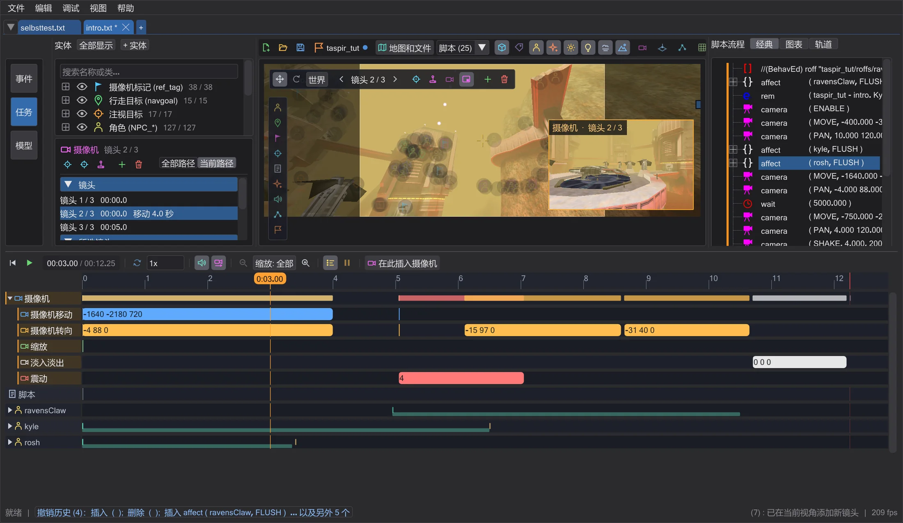
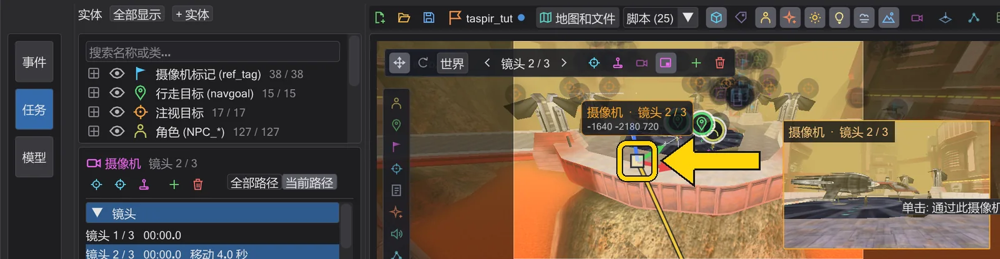
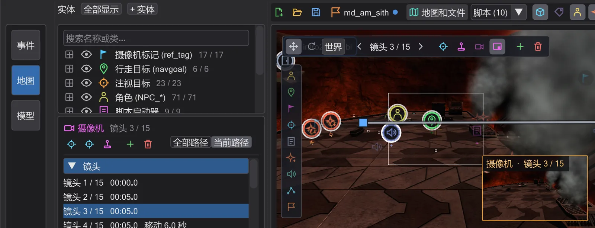
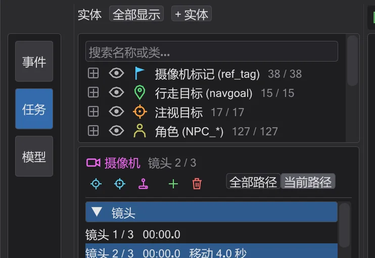

教程
第一个过场动画
两个摄像机镜头,中间一段平滑移动,透过摄像机观看,并为游戏编译。
步骤#
- 1
打开任务。 文件 → 加载任务…,选择
MD_Missions_Ep3.pk3,点选md_am_sith。地图打开,任务的所有脚本各在一个标签页中;停留在intro2_sith标签页。
任务已打开。 - 2
选择摄像机。 单击地图上的摄像机图标(或时间轴的 摄像机 行)。左侧显示其镜头,地图上显示其路径。

已选中摄像机。 - 3
飞到合适的位置并添加镜头。 按住鼠标右键,用 W A S D 飞行,直到视角满意。按 在此新建镜头:在所选镜头之后添加位于当前视角的
camera ( MOVE )和camera ( PAN )。
在当前视角新建的镜头。 - 4
设置移动时间。 在 所选镜头 下把 移动时间 设为
3(秒):摄像机现在用三秒从上一个镜头飞到这个镜头。0表示硬切。
摄像机面板中的移动时间。 - 5
观看。 打开 摄像机预览,单击小画面透过摄像机观看,然后按地图下方的播放按钮(▶)。时间轴会像游戏中一样播放场景——开启 声音 时还会播放声音。

播放时透过摄像机观看。 - 6
保存并编译。 来自
.pk3的脚本还没有对应的文件,因此第一次保存时会询问保存位置:选择模组的scripts文件夹(例如MD\scripts\md_am\)。随后 编译！ 会在旁边写出游戏运行的.ibi。如果是你自己的任务,保存任务 会把一切打包进.pk3——参见 你自己的任务。
操作栏——编译！ 位于文件按钮下方,成功时会闪绿色。